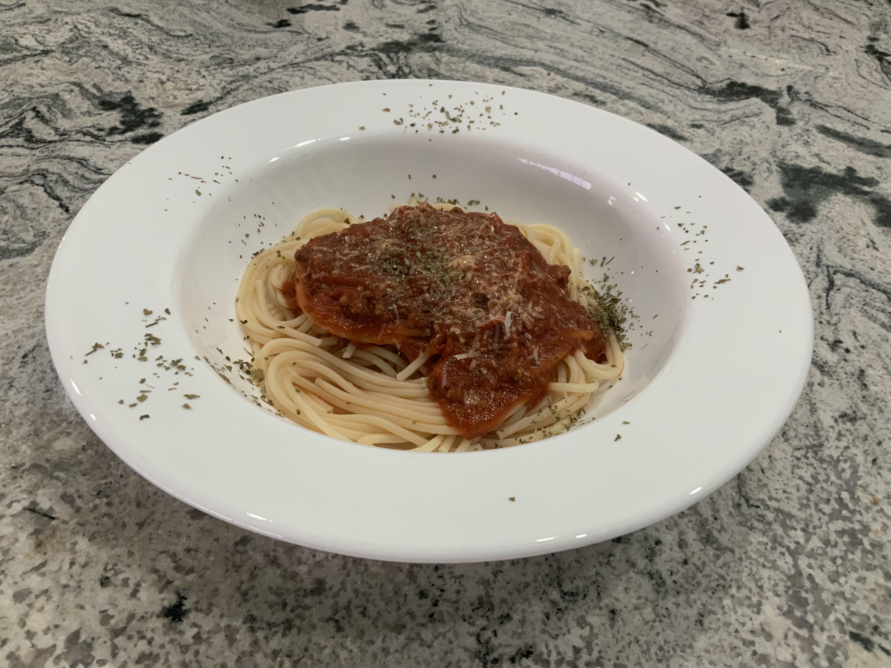

There aren't many people in the world who don't appreciate Italian food, and pasta, like pizza, is up there at the top. This is the tomato sauce I grew up with, and to this day, there isn't anything that can compete with it in flavor, richness, or texture.
Ingredients:
(Note: You will need a 3 or 4 quart heavy saucepan. Recipe serves 4 people.)
- 2x 28oz cans San Marzano whole tomatoes. (Note: look for the official San Marzano seal.)
- 1 medium onion, diced
- 2 tbsp olive oil
- 1⁄2 tsp oregano
- 1⁄2 tsp thyme
- 1⁄2 tsp basil
- 1⁄2 tsp crushed rosemary
- 2 cloves garlic, minced
- 2 tbsp tomato paste
- Salt and pepper, to taste.
- 2 pinches of red pepper flakes
Instructions:
- Empty whole tomatoes into a large mixing bowl. Remove and discard skin and caps from each tomato.
- Crush tomatoes by hand for chunkier sauce or use immersion blender for smoother sauce. Make sure there are no skins or caps left.
- Heat olive oil in saucepan on medium heat.
- Generously salt the onion and add a pinch of pepper before adding to the heated pan.
- Stir with wooden spoon until onions are soft (4-6 minutes)
- Add spices.
- Add minced garlic and stir for 1-3 minutes, dropping to medium-low heat; do not let garlic burn.
- Add tomatoes to pan, keep stirring until onions and garlic are incorporated.
- Add tomato paste and partially cover the pan. Let it simmer for 40 minutes.
- You can use an immersion blender now if you didn't do so before and desire a smoother sauce.
- Add salt, pepper to taste. You can also add any extra italian herbs at this point if you want more.